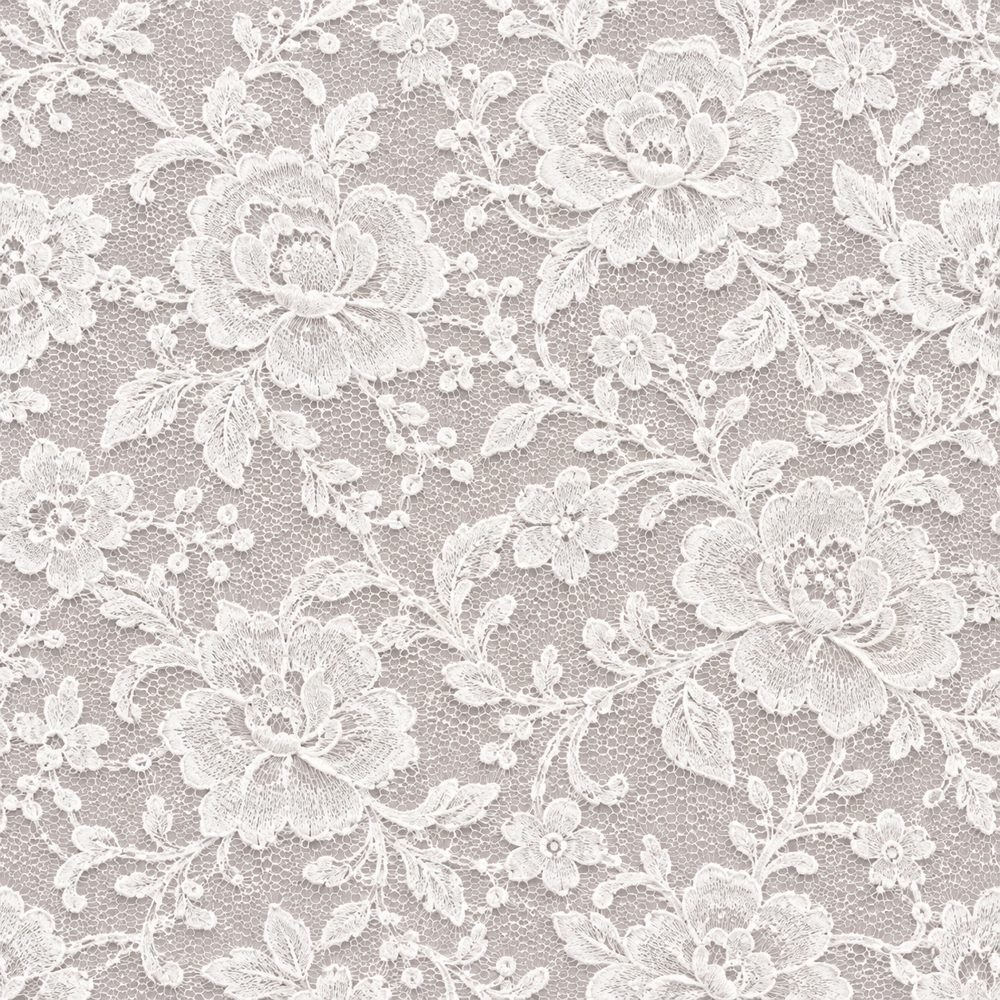
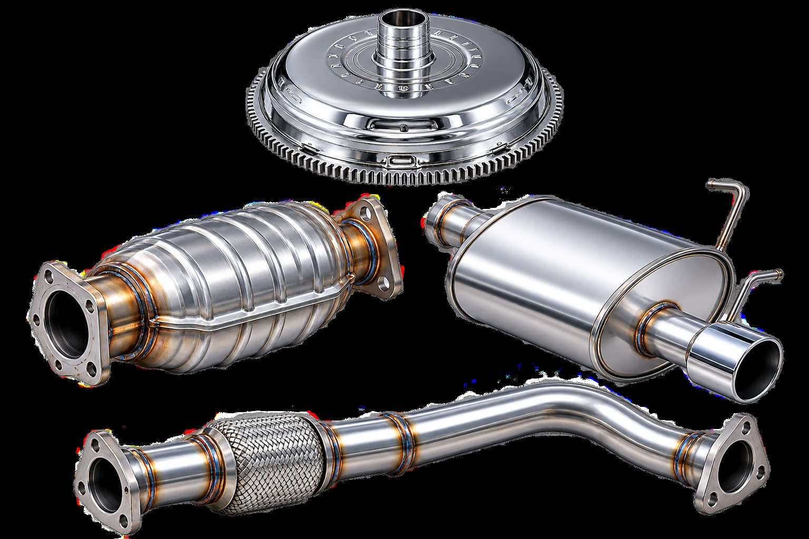

2016
โรงเรียนปราจีนกัลยาณี
สำเร็จการศึกษาสายวิทยาศาสตร์–คณิตศาสตร์ พร้อมเข้าร่วมการแข่งขันสร้างเกมสร้างสรรค์จากคอมพิวเตอร์ระดับเขต และการแข่งขันสะกดคำศัพท์ภาษาอังกฤษ NJ Spelling Bee 2016 ในปีเดียวกัน
เรซูเม่หนึ่งแผ่นบอกได้แค่ว่าฉันทำอะไรมาบ้าง หน้านี้เล่าว่าทุกอย่างเริ่มต้นและต่อกันมาอย่างไร เลื่อนลงเพื่ออ่านตามเส้นไปทีละปี
สำเร็จการศึกษาสายวิทยาศาสตร์–คณิตศาสตร์ พร้อมเข้าร่วมการแข่งขันสร้างเกมสร้างสรรค์จากคอมพิวเตอร์ระดับเขต และการแข่งขันสะกดคำศัพท์ภาษาอังกฤษ NJ Spelling Bee 2016 ในปีเดียวกัน
สำเร็จการศึกษาระดับปริญญาตรี คณะมนุษยศาสตร์ เอกภาษาญี่ปุ่น วิชาโทภาษาอังกฤษ และผ่านการสอบวัดระดับความรู้ภาษาญี่ปุ่น JLPT N2 ในปี 2020
ผู้ผลิตและนำเข้า–ส่งออกผ้าลูกไม้ ในเครือสหพัฒน์ อ.กบินทร์บุรี จ.ปราจีนบุรี ปฏิบัติหน้าที่ล่ามภาษาญี่ปุ่นเป็นเวลา 1 ปี รับผิดชอบการประสานงานและแปลในแผนกผลิต (โรงถัก โรงย้อม โรงตัด) ฝ่ายควบคุมคุณภาพ งานแปลเอกสาร และการล่ามประชุมภายในแผนก

ผู้ผลิตและจำหน่ายชิ้นส่วนรถยนต์ (Torque Converter, ชิ้นส่วนเกียร์, Catalytic Converter, ท่อไอเสีย) เริ่มปฏิบัติงานในตำแหน่งล่ามภาษาญี่ปุ่นแผนกผลิต รับผิดชอบการสื่อสารและแปลด้านเทคนิคในไลน์ Torque Converter, Exhaust Silencer, Catalytic Converter, Stamping และ Maintenance ตลอด 2 ปีแรก

ขยายบทบาทสู่การเป็นล่ามและพิธีกรในกิจกรรมของโรงงาน ทั้งการบรรยายแนะนำโรงงานต้อนรับลูกค้าผู้มาเยี่ยมชม งานเลี้ยงอำลาบุคลากรชาวญี่ปุ่น และงานกีฬาสีประจำปี
ปัจจุบันร่วมสนับสนุนงานแปลในบางกรณีให้แก่แผนก Engineer และ New Model รวมถึงมีประสบการณ์จากการเดินทางไปปฏิบัติงาน Business Trip ที่ประเทศจีนและประเทศญี่ปุ่น
ถ้าสนใจร่วมงานกัน ติดต่อได้ที่
LINE: [ไอดีของคุณ] | โทร: [เบอร์โทร]